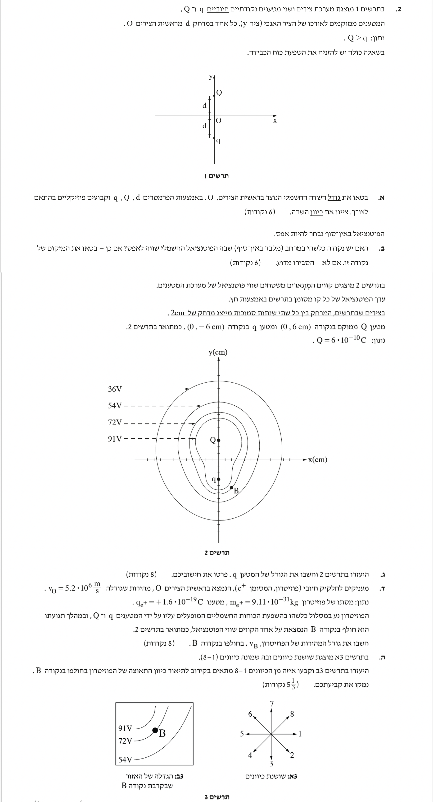
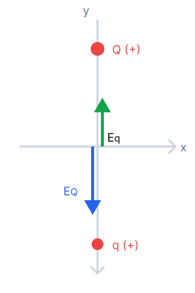

מוגש באהבה לתלמידים, עם הסברים מפורטים צעד אחר צעד.

ביטוי לגודל השדה החשמלי השקול בראשית הצירים \( O \) באמצעות הפרמטרים \( Q, q, d \) וקבועים פיזיקליים. כמו כן, יש לציין את כיוון השדה.
נצייר תרשים גוף חופשי (FBD) לוקאלי המייצג את וקטורי השדה בראשית הצירים. שדה ממטען חיובי תמיד מצביע החוצה (הרחק) מהמטען.

השדה שיוצר המטען \( Q \) (שנמצא למעלה) בראשית הצירים מכוון כלפי מטה (בכיוון ציר \( -y \)), וגודלו הוא \( E_Q = k\frac{Q}{d^2} \).
השדה שיוצר המטען \( q \) (שנמצא למטה) בראשית הצירים מכוון כלפי מעלה (בכיוון ציר \( +y \)), וגודלו הוא \( E_q = k\frac{q}{d^2} \).
מכיוון שנתון לנו כי \( Q > q \), ברור שגודל השדה \( E_Q \) גדול מ- \( E_q \). השדה השקול יהיה ההפרש ביניהם, וכיוונו יהיה ככיוון השדה החזק יותר (כלפי מטה).
כשיש שני מטענים חיוביים משני עברי נקודה, שניהם יוצרים שדות המצביעים החוצה מהם (בכיוונים מנוגדים) - ממש כמו שני אנשים שדוחפים חפץ משני צדדים! המטען הגדול יותר (במקרה שלנו \( Q \)) תמיד "ינצח" במאבק הדחיפות ויקבע את הכיוון הסופי של השדה השקול. חשוב מאוד לצייר את הווקטורים באורכים מתאימים כדי למנוע בלבול.
האם קיימת נקודה כלשהי במרחב (שאינה באינסוף) שבה הפוטנציאל החשמלי שווה לאפס? אם כן, למצוא את מיקומה. אם לא, להסביר מדוע.
הפוטנציאל החשמלי הכולל בנקודה כלשהי במרחב הוא סכום הפוטנציאלים שיוצר כל מטען בנפרד. נרשום את הביטוי עבור נקודה כלשהי במרחב שמרחקה מהמטענים הוא \( r_1 \) ו- \( r_2 \):
המרחקים \( r_1 \) ו- \( r_2 \) הם גדלים גאומטריים ולכן הם תמיד חיוביים. הקבוע \( k \) הוא חיובי, ונתון שהמטענים \( Q \) ו- \( q \) שניהם חיוביים.
חיבור של שני איברים חיוביים בהכרח ייתן תוצאה הגדולה מאפס (\( V_{tot} > 0 \)). הדרך היחידה שבה הביטוי יתאפס היא אם המרחקים \( r_1 \) ו- \( r_2 \) ישאפו לאינסוף.
כאן רואים את ההבדל העצום בין שדה חשמלי לבין פוטנציאל חשמלי. שדה הוא וקטור, ולכן כיוונים מנוגדים יכולים לבטל זה את זה (כמו במשיכת חבל - ראינו שיש נקודה שבה השדה יכול להתאפס אם שמים אותם נכון). לעומת זאת, פוטנציאל הוא סקלר, כמו "גובה" או "טמפרטורה". שתי "גבעות" חיוביות לעולם לא ייצרו "בור" עמוק מספיק כדי להגיע לגובה אפס. הן רק מוסיפות זו לזו!
לחשב את הגודל של המטען הנקודתי \( q \).
נחשב את המרחק \( r \) מכל אחד מהמטענים אל הנקודה שעל ציר ה-\( x \). בזכות הסימטריה (הנקודה נמצאת על האנך האמצעי לקטע המחבר את המטענים), המרחק לשני המטענים זהה. נשתמש במשפט פיתגורס עבור הנקודה \( (0.08\text{ m}, 0) \):
נרשום את משוואת הפוטנציאל הכולל בנקודה זו, ונציב את המרחק שמצאנו:
נציב את הנתונים כדי לבודד את המטען \( q \):
נפתח סוגריים ונעביר אגפים:
בדיקה עצמית (רק כדי להיות בטוחים): נבדוק האם המטען שמצאנו מקיים את התנאים בנקודת הבקרה \( (0.12\text{ m}, 0) \). המרחק למטענים כעת הוא \( r = \sqrt{0.12^2 + 0.06^2} = \sqrt{0.018} \approx 0.13416\text{ m} \).
התוצאה תואמת להפליא לערך \( 54\text{ V} \) המופיע בתרשים 2!
הבחירה בנקודות שנמצאות על ציר ה-x אינה מקרית. ציר ה-x הוא "האנך האמצעי" בין שני המטענים שעל ציר ה-y. בנקודות אלו, המרחק לכל אחד מהמטענים זהה! הדבר מפשט דרמטית את האלגברה (אין צורך במכנה משותף מסובך). תמיד כדאי לסרוק את התרשים או הגרף ולחפש "נקודות זהב" כאלו. בדרך כלל יתנו לנו נקודות כאלה שקל ונוח לקרוא מתוך השרטוט.
לחשב את גודל המהירות של הפוזיטרון, \( v_B \), כאשר הוא חולף בנקודה \( B \).
הכוח היחיד שמבצע עבודה על הפוזיטרון הוא הכוח החשמלי, שהוא כוח משמר. לכן האנרגיה המכנית הכוללת נשמרת.
ראשית, נחשב את הפוטנציאל החשמלי בראשית הצירים \( O \) שבה נמצא הפוזיטרון בהתחלה. המרחקים מ- \( O \) לשני המטענים שווים (\( r = 0.06\text{ m} \)).
כעת נרשום את משוואת שימור האנרגיה בין נקודה \( O \) (התחלה) לנקודה \( B \) (סוף):
נבודד את האיבר עם המהירות המבוקשת ונחלק במסה:
נציב את כל הערכים המספריים פנימה:
נחשב במחשבון ונוציא שורש ריבועי:
נעגל ל-3 ספרות מהותיות.
הפוזיטרון במקרה הזה נע במסלול שמושפע מכוחות משתנים (השדות סביבו משתנים בגודל ובכיוון כל הזמן). לנסות לחשב את תנועתו בעזרת חוקי ניוטון (קינמטיקה ודינמיקה) זו משימה כמעט בלתי אפשרית כאן! היופי של שימור אנרגיה הוא שלא אכפת לנו מהקשיים "בדרך" - מהמסלול המדויק. אנחנו צריכים רק לדעת מה יש בהתחלה ומה בסוף כדי למצוא את המהירות.
עוד בדיקת הגיון קטנה: הפוזיטרון (חיובי) נע מנקודה בעלת פוטנציאל גבוה (120V) לנקודה בעלת פוטנציאל נמוך יותר (72V), כמו כדור שמתגלגל במורד הר. האנרגיה הפוטנציאלית שלו ירדה, ולכן האנרגיה הקינטית - וגודל המהירות - חייבים לגדול! ואכן, המהירות גדלה מ- 5.2 ל- 6.63.
לקבוע, תוך נימוק, איזה מן הכיוונים 1-8 בתרשים 3 מתאר בקירוב הטוב ביותר את כיוון התאוצה של הפוזיטרון כאשר הוא חולף בנקודה \( B \).
כיוון התאוצה של החלקיק תמיד מקביל לכיוון שקול הכוחות הפועל עליו (לפי החוק השני של ניוטון). מכיוון שהפוזיטרון הוא בעל מטען חיובי, הכוח החשמלי שפועל עליו, וכתוצאה מכך גם התאוצה שלו, פועלים בדיוק באותו כיוון של וקטור השדה החשמלי בנקודה \( B \).
נקבע את כיוון השדה החשמלי מתוך תרשים 3 בשני שלבים פשוטים:
1. השדה מאונך לקווי הפוטנציאל: אנו רואים את קו הפוטנציאל העובר בנקודה \( B \). מתוך שושנת הכיוונים, הכיוונים שמאונכים בקירוב לקו זה הם חץ 2 או חץ 6.
2. השדה מצביע מגבוה לנמוך: כיוון השדה החשמלי הוא תמיד במורד קווי הפוטנציאל. מכיוון שמעל לנקודה \( B \) הפוטנציאל גבוה יותר (\( 91\text{ V} \)) ובנקודה \( B \) הוא נמוך יותר (\( 72\text{ V} \)), ברור שהשדה מצביע החוצה (מפוטנציאל גבוה לנמוך).
הכיוון שעונה על שני התנאים הללו (גם מאונך וגם מצביע מטה/החוצה מגבוה לנמוך) הוא חץ מספר 2.
אין צורך להסתבך עם סכום וקטורים כאשר יש לנו מפת קווים שווי פוטנציאל! אפשר לדמיין את קווי הפוטנציאל כמו מפה טופוגרפית של הר (במקרה שלנו "הר" חשמלי חיובי). מטען חיובי תמיד ירצה להתגלגל במורד ההר, במסלול התלול ביותר (מאונך לקווי הגובה), ממש כמו כדור רגיל. לכן הוא יאיץ למטה והחוצה, בכיוון 2.
כמובן שיכולנו גם לבצע חישוב וקטורי מלא (סופרפוזיציה של שדות) בנקודה B, שאת מיקומה המדויק אנו יכולים לקרוא מתוך הגרף. דרך זו בהחלט הייתה עובדת ומובילה לאותה מסקנה בדיוק! עם זאת, מדובר בדרך ארוכה, מסורבלת ומורכבת הרבה יותר מבחינה מתמטית (פירוק לרכיבים, טריגונומטריה וכו'). השימוש החכם בתכונות של קווי הפוטנציאל חוסך לנו את כל העבודה הקשה.